P.23—23
项目背景
从国家公园自然生态与文化资源出发，构建数字文旅体验的项目命题。

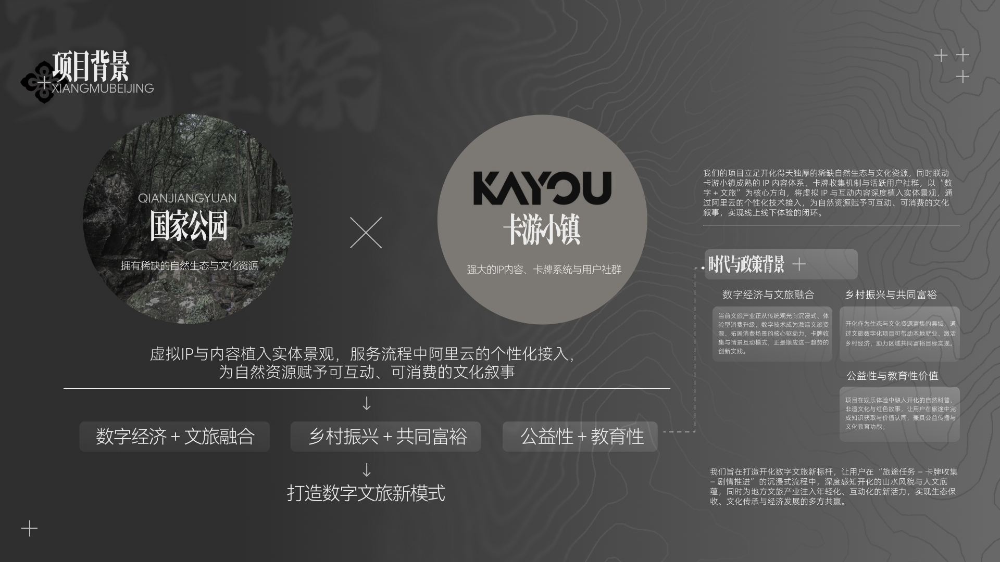
＋ 放大查看P.24—24
前期调研
梳理自然资源、人文资源与核心人群，寻找体验与内容的交会点。

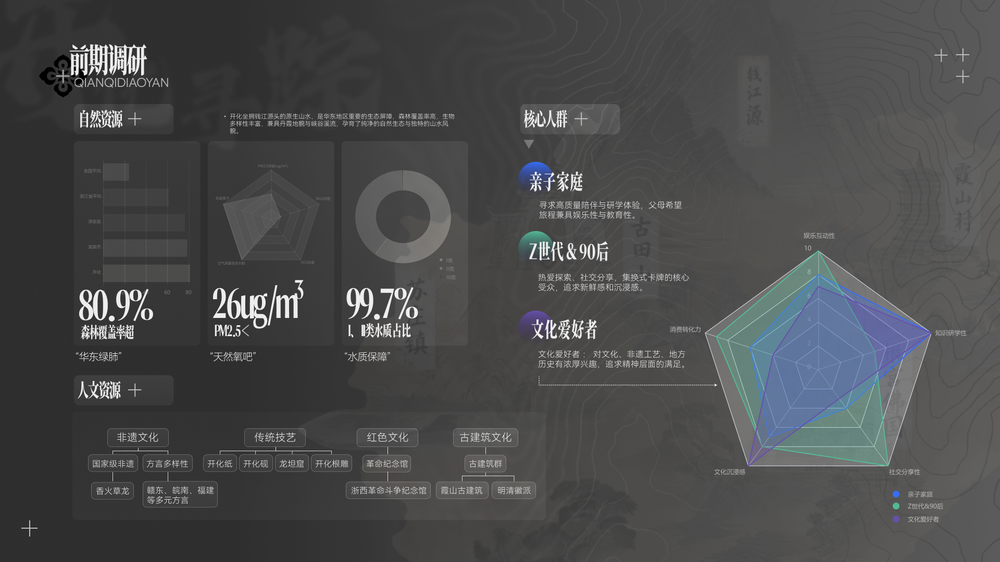
＋ 放大查看P.25—25
用户画像
亲子家庭、Z 世代与文化爱好者各自带着不同的探索动机进入场域。

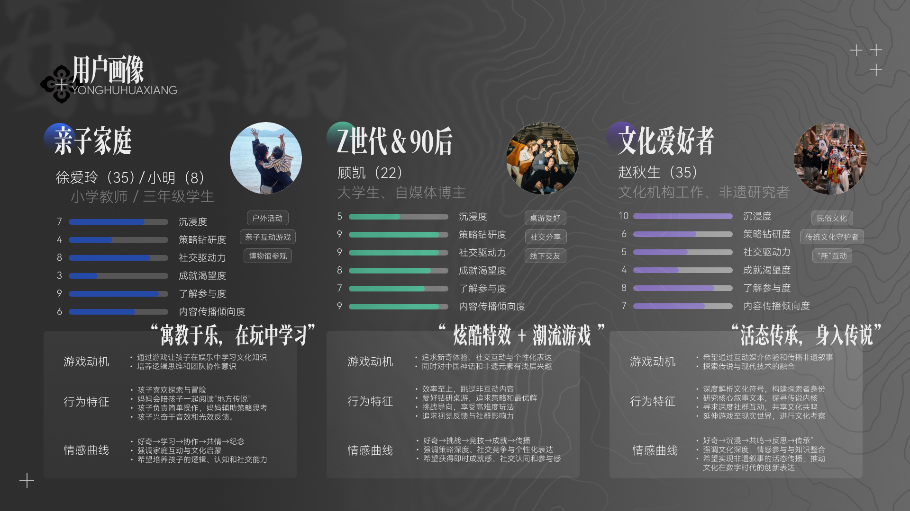
＋ 放大查看P.26—27
价值主张与体验目标
以卡牌作为实体媒介，让在地文化、个人价值与线上线下分享形成关联。

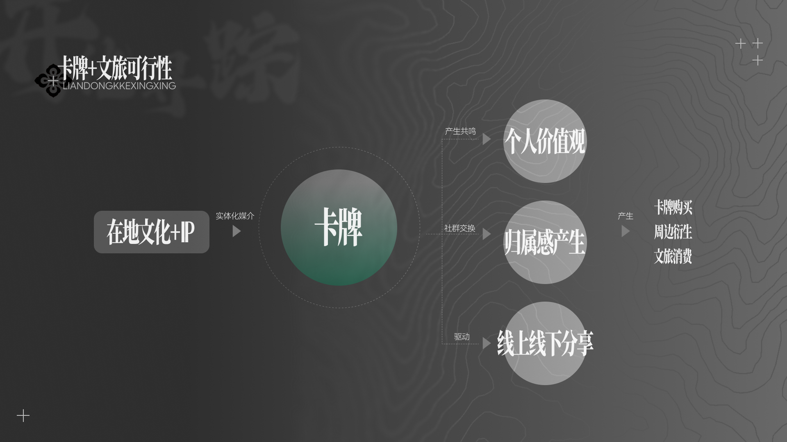
＋ 放大查看
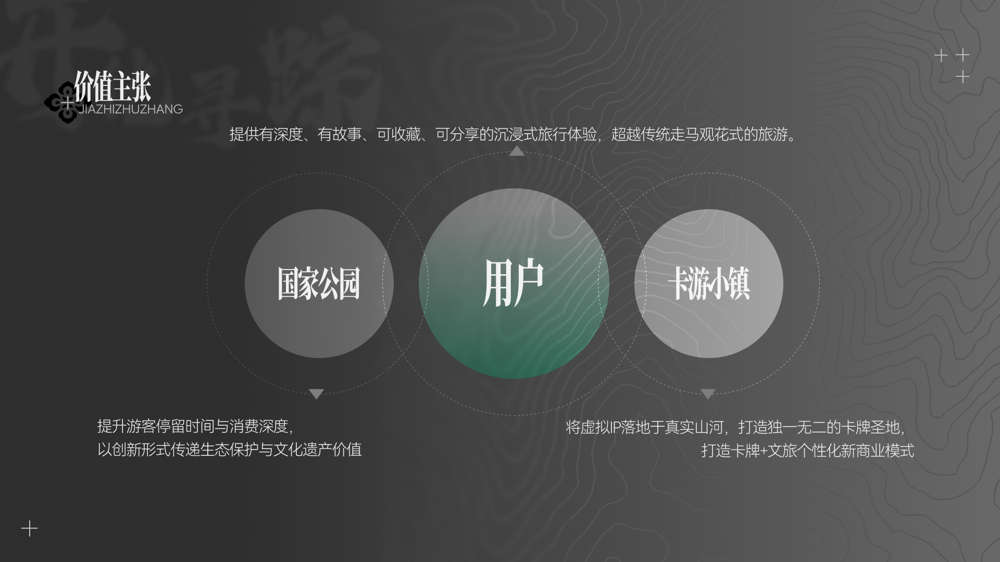
＋ 放大查看P.28—29
交互流程与服务架构
从线下打卡、AR 互动到收集卡牌与社交回流，追踪整个服务闭环。

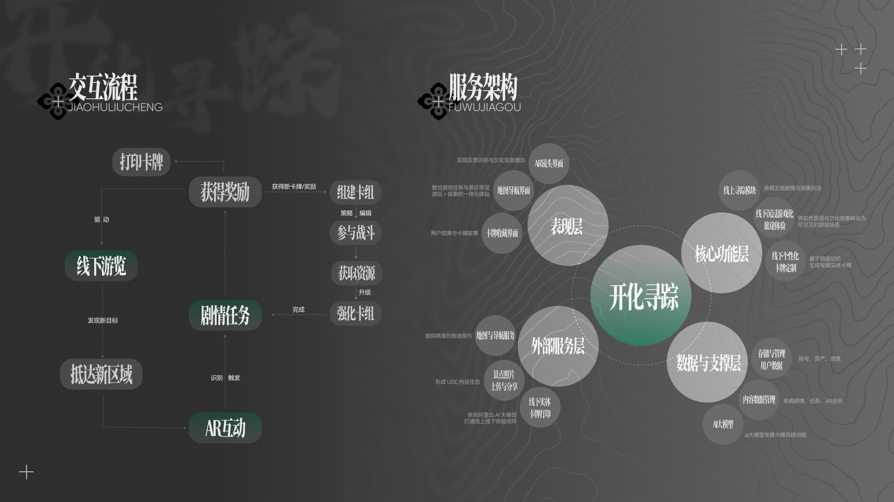
＋ 放大查看
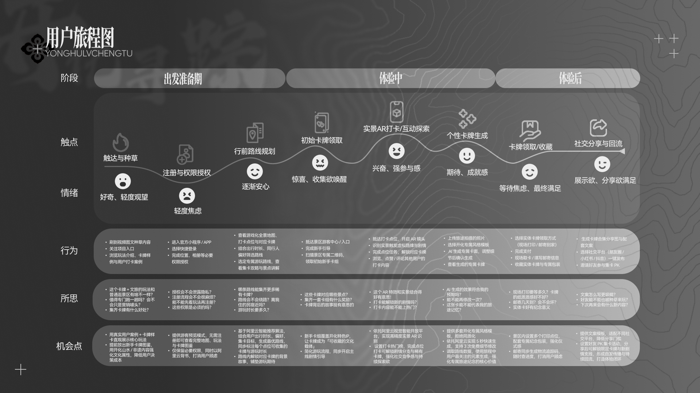
＋ 放大查看P.30—31
AR 打卡：地图定位与现场互动
在地图上发现打卡点，进入现场 AR 拍摄，生成内容并留下探索记录。

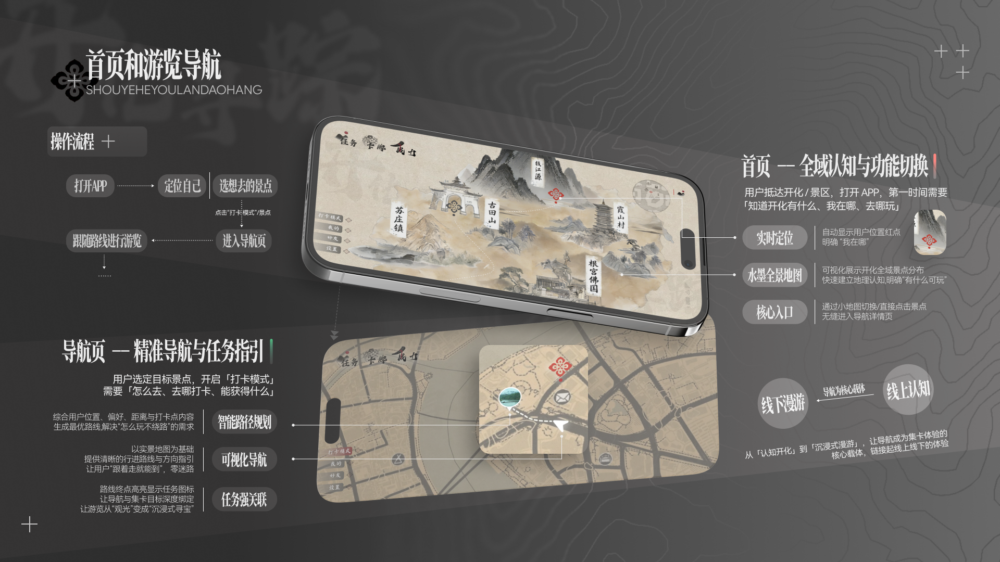
＋ 放大查看
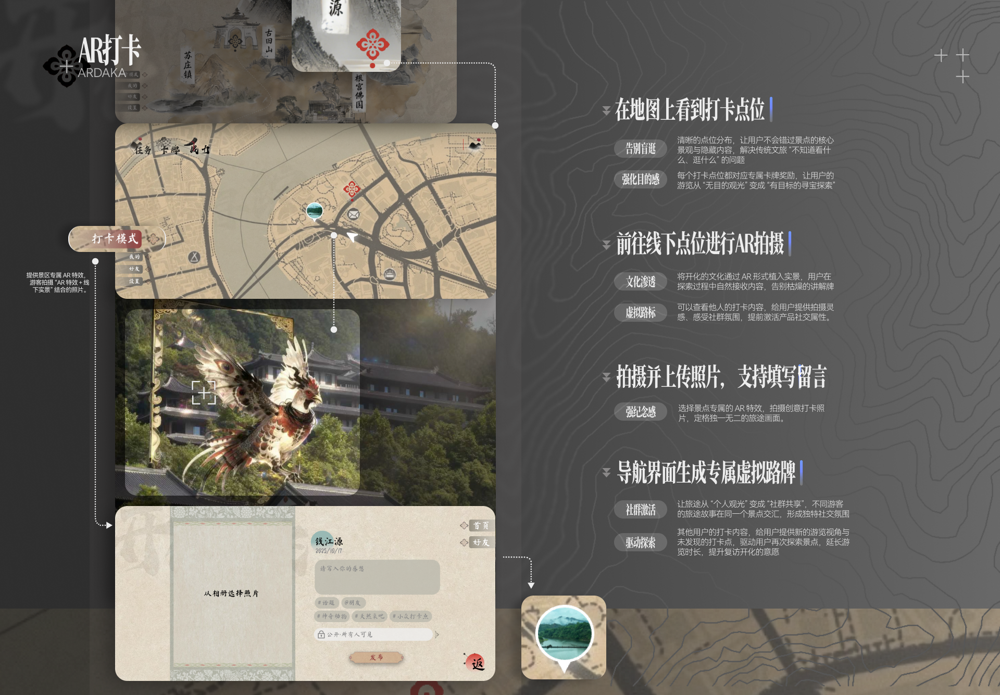
＋ 放大查看P.32—33
战斗与卡牌规则
以任务、角色选择、卡牌收集与技能属性构成游戏化探索机制。

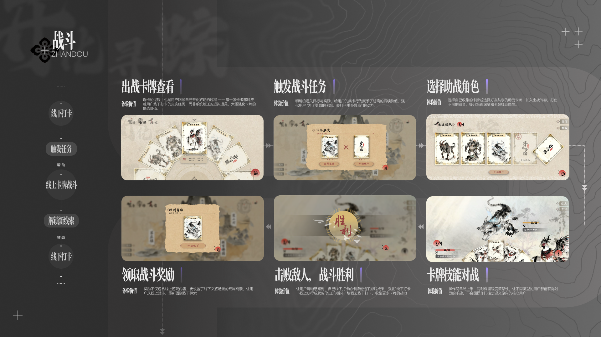
＋ 放大查看
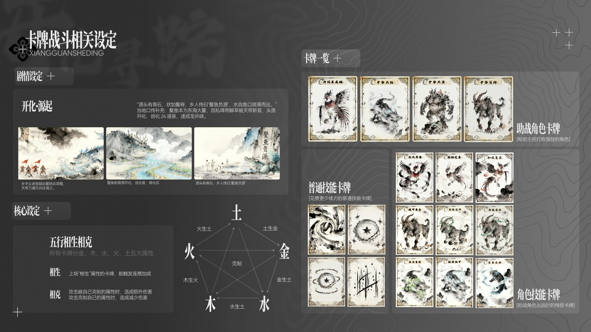
＋ 放大查看P.34—35
地图设计与其他功能
把文化地点、五行属性、卡牌与导航线索组织在同一体验场域。

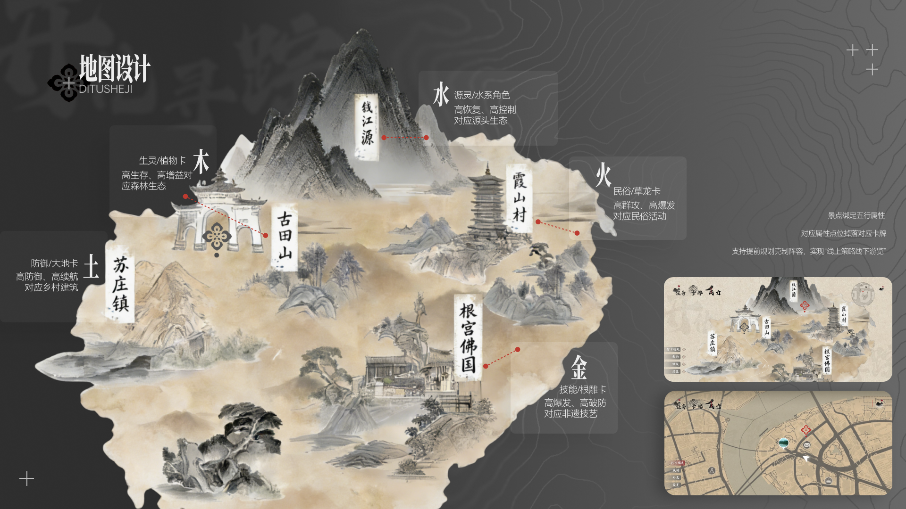
＋ 放大查看
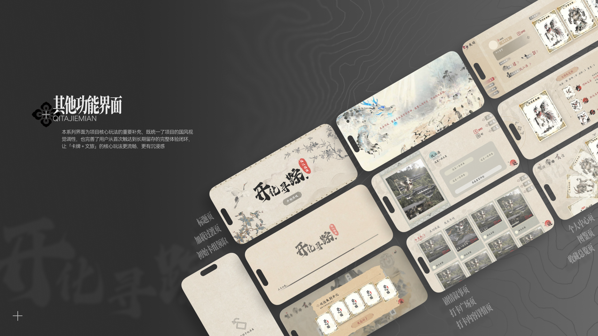
＋ 放大查看P.36—36
设计反思
回到观光记忆、游览目标、文化传递与长期运营等体验问题。

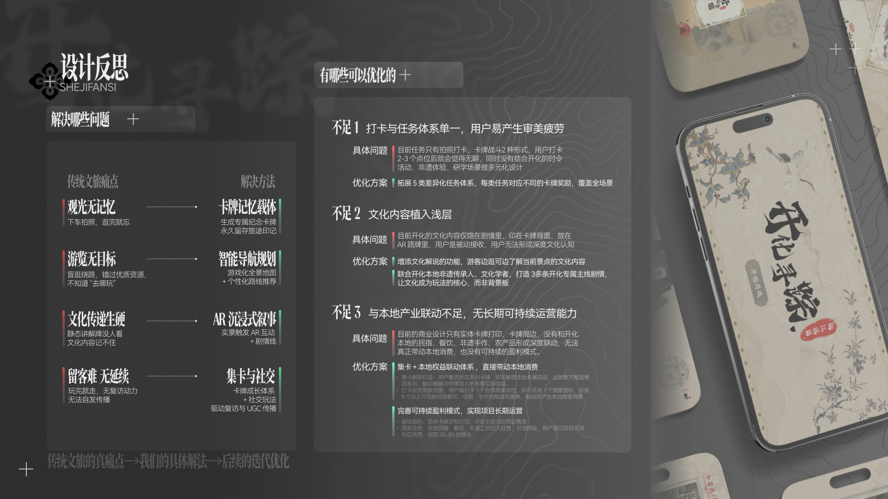
＋ 放大查看